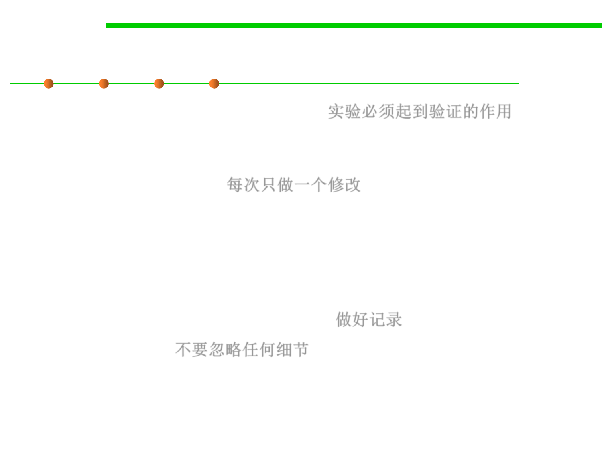

Diagnose by experiments
7.4 Debugging
▪ Experiments Must Prove Something 实验必须起到验证的作用
– Experiments are a means to an end, not an end in themselves. There is no
point performing an experiment unless it proves something.
▪ One Change at a Time 每次只做一个修改
– One of the basic rules of constructing experiments is that you should make
only a single change at a time.
– This rule applies to any kind of change—changes to the source, the
environment, input files, and so on. It applies to anything, in fact, that
might have an effect on the software.
▪ Keep a Record of What You’ve Tried 做好记录
▪ Ignore Nothing 不要忽略任何细节